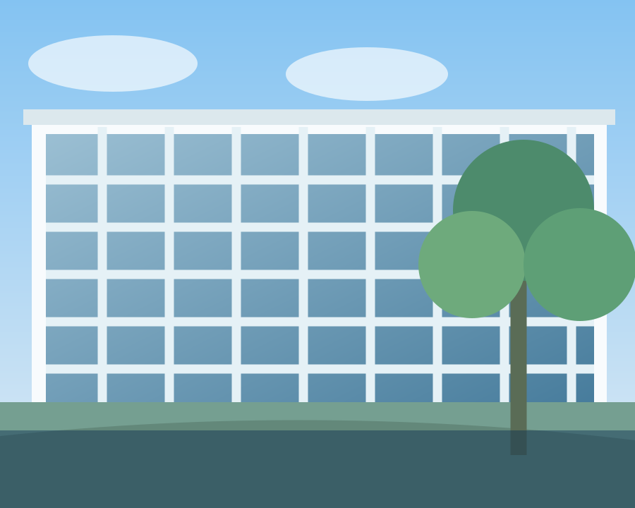

Exploring
Materials for a
Sustainable Future.
Advanced functional materials for meaningful energy and environmental solutions.

Materials with
purpose.
The Environmental Energy Material Laboratory focuses on the design and development of advanced functional materials, particularly Metal–Organic Frameworks (MOFs), through precise synthesis and characterization.
Our research explores various energy and environmental applications, including CO₂ and VOC capture, hydrogen storage, heterogeneous catalysis, and resource recovery and recycling.
MOF의 정밀한 합성과 구조적·물리화학적 특성 분석을 바탕으로, 다양한 응용 분야에 최적화된 기능성 소재를 설계하고 개발합니다.
특히 이산화탄소(CO₂) 및 휘발성 유기화합물(VOCs)의 포집, 수소 저장, 불균일 촉매 반응, 자원 회수 및 재활용 공정 등 에너지·환경 분야의 다양한 응용을 목표로 연구를 수행하고 있습니다.
Research Areas.
Metal–Organic
Frameworks
다공성 금속–유기 골격체의 정밀 합성과 구조·기공 특성 분석
EXPLORE AREA 02 / CARBON MANAGEMENTCO₂ Capture
& Conversion
CO₂ 포집·전환용 기능성 소재 및 촉매 연구
EXPLORE AREA 03 / ADSORPTION SCIENCEWater
Adsorption
수분 흡착 거동과 기공 구조의 상관관계 연구
EXPLORE AREA* 연구 분야 상세 소개는 연구실 공식 확인 후 보완할 수 있습니다.